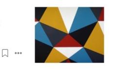

Commonly Used Design Patterns in JavaScript
A look at the singleton,iterator,and factory patterns
john Au-Yeung in Better Programming
Feb 24 · 4 min read
Why Your App Looks Bteer in Sketch
Exploring rendering differrences between Sketch an iOS
Nathan Gitter
Jan 31,2018 · 6 min read
javaScript Bundlers,a Comparison
How do javaScript bundlers stack up against each other?
Aj Meyghani
Oct 28,2018 · 27 min read

Popular on Medium
01
How to Distinguish Between a Public Safety Crisis and a Personal Anxiety
Imani Bashir in Forge
Mar 3 · 4 min read
02
There's an Epidemic That's a Bigger Threat Than the Coronavirus
Dr.David L.Katz in Heated
Feb 29 · 8 min read
03
The Flawed,Twisted Legacy of jack Welch
Rob Walker in Marker
Mar 3 · 4 min read